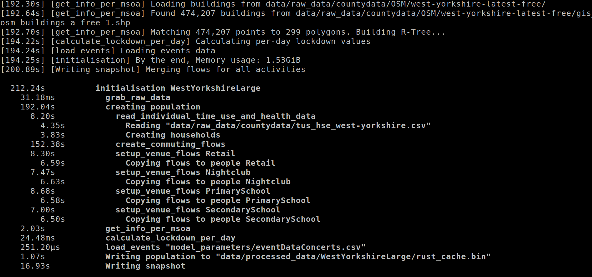

Code walkthrough
Generally useful techniques
The code-base makes use of some techniques that may be generally applicable to other projects.
Split code into two stages
Agent-based models and spatial interaction models require some kind of input. Often the effort to transform external data into this input can exceed that of the simulation component. Cleanly separating the two problems has some advantages:
- iterate on the simulation faster, without processing raw data every run
- reuse the prepared input for future projects
- force thinking about the data model needed by the simulation, and transform the external data into that form
Explicit data schema
Dynamically typed languages like Python don’t force you to explicitly list the shape of input data. It’s common to read CSV files with pandas, filter and transform the data, and use that throughout the program. This can be quick to start prototyping, but is hard to maintain longer-term. Investing in the process of writing down types:
- makes it easier for somebody new to understand your system – they can first focus on what you’re modeling, instead of how that’s built up from raw data sources
- clarifies what data actually matters to your system; you don’t carry forward unnecessary input
- makes it impossible to express invalid states
- One example is here – per person and activity, there’s a list of venues the person may visit, along with a probability of going there. If the list of venues and list of probabilities are stored as separate lists or columns, then their length may not match.
- reuse the prepared input for future projects
There’s a variety of techniques for expressing strongly typed data:
Type-safe IDs
Say your data model has many different objects, each with their own ID – people, households, venues, etc. You might store these in a list and use the index as an ID. This is fine, but nothing stops you from confusing IDs and accidentally passing in venue 5 to a function instead of household 5. In Rust, it’s easy to create “wrapper types” like this and let the compiler prevent these mistakes.
This technique is also useful when preparing external data. GTFS data describing public transit routes and timetables contains many string IDs – shapes, trips, stops, routes. As soon as you read the raw input, you can store the strings in more precise types that prevent mixing up a stop ID and route ID.
Idempotent data preparation
If you’re iterating on your initialisation pipeline’s code, you probably don’t want to download a 2GB external file every single run. A common approach is to first test if a file exists and don’t download it again if so. In practice, you may also need to handle unzipping files, showing a progress bar while downloading, and printing clear error messages. This codebase has some common code for doing this in Rust. We intend to publish a separate library to more easily call in your own code.
Logging with structure
It’s typical to print information as a complex pipeline runs, for the user to track progress and debug problems. But without any sort of organization, it’s hard to follow what steps take a long time or break. What if your logs could show the logical structure of your pipeline and help you understand where time is spent?

The screenshot above shows a summary printed at the end of a long pipeline run. It’s immediately obvious that the slowest step is creating commuting flows.
This codebase uses the tracing framework for logging, with a custom piece to draw the tree. (We’ll publish this as a separate library once it’s more polished.) The tracing framework is hard to understand, but the main conceptual leap over regular logging framworks is the concept of a span. When your code starts one logical step, you call a method to create a new span, and when it finishes, you close that span. Spans can be nested in any way – create_commuting_flows happens within the larger step of creating population.
Determinism
Given the same inputs, your code should always produce identical output, no matter where it’s run or how many times. Otherwise, debugging problems becomes very tedious, and it’s more difficult to make conclusions from results. Of course, many projects have a stochastic element – but this should be controlled by a random number generator (RNG) seed, which is part of the input. You vary the seed and repeat the program, then reason about the distribution of results.
Aside from organizing your code to let a single RNG seed influence everything, another possible source of non-determinism is iteration order. In Rust, a HashMap could have different order every time it’s used, so we use a BTreeMap instead when this matters. In Python, dictionaries are ordered. Be sure to check for your language.
Protocol buffers
SPC uses protocol buffers for output. This has some advantages explained the “explicit data schema” section above, but the particular choice of protocol buffer has some limitations.
First, proto3 doesn’t support required fields. This is done to allow schemas to evolve better over time, but this isn’t a feature SPC makes use of. There’s no need to have new code work with old data, or vice versa – if the schema is updated, downstream code should adapt accordingly and use the updated input files. The lack of required fields leads to imprecise code – a person’s health structure is always filled out, but in Rust, we wind up with Option<Health>. Differentiating 0 from missing data also becomes impossible – urn is optional, but in protobuf, we’re forced to map the missing case to 0 and document this.
Second, protocol buffers don’t easily support type-safe wrappers around numeric IDs, so downstream code has to be careful not to mix up household, venue, and person IDs.
Third, protocol buffers support limited key types for maps. Enumerations can’t be used, so we use the numeric value for the activity enum.
We’ll evaluate flatbuffers and other alternative encodings.
Note that in any case, SPC internally doesn’t use the auto-generated code until the very end of the pipeline. It’s always possible to be more precise with native Rust types, and convert to the less strict types last.